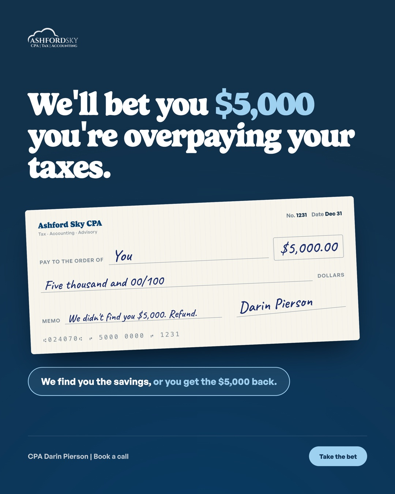

Ashford SkySponsored · 🌐
⋯Book a written year-end tax plan for $5,000 before December 31. If we don't find at least $5,000 in tax savings, we refund the full fee. If we do and you keep us on for accounting and tax, the whole $5,000 is credited toward that work. Most owners only hear about their taxes in April, when the year is already closed and there's nothing left to change. We look at how the business is set up, how you pay yourself, and what you bought or built this year. Then you get a written plan with the moves to make before December 31. Book a call with Darin Pierson, CPA, and bring last year's return.

👍 Like💬 Comment➦ Share